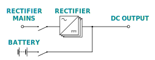
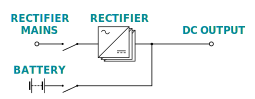

Module Configuration for N + 0, N + 1 and N + x
The module configuration redundancy only applies to inverter modules and not static switch or manual bypass modules.
The module configuration redundancy only applies to rectifier and inverter modules and not static switch or manual bypass modules.
N + 0 Configuration
No redundancy of modules. The system has exactly as many modules installed as it needs to supply the full load and charge the battery.
No redundancy of modules. The system has exactly as many modules installed as it needs to supply the full load.
N + 1 Configuration
One redundant module. The recommended and standard configuration. If one module becomes inoperable or needs to be replaced, the remaining modules can still supply the full load and charge the battery.
One redundant module. The recommended and standard configuration. If one module becomes inoperable or needs to be replaced, the remaining modules can still supply the full load.
N + x Configuration
A specified number of redundant modules. In case additional redundancy is requested, x additional modules can be added. If x number of modules becomes inoperable, the remaining modules can still supply the full load and charge the battery.
A specified number of redundant modules. In case additional redundancy is requested, x additional modules can be added. If x number of modules becomes inoperable, the remaining modules can still supply the full load.
 
